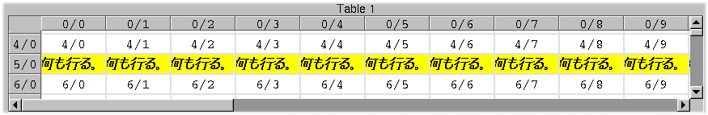
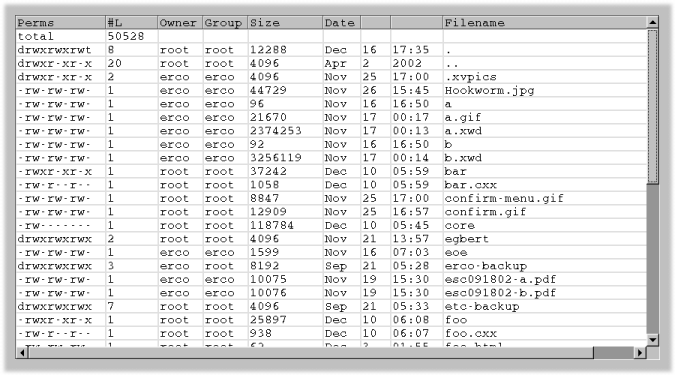
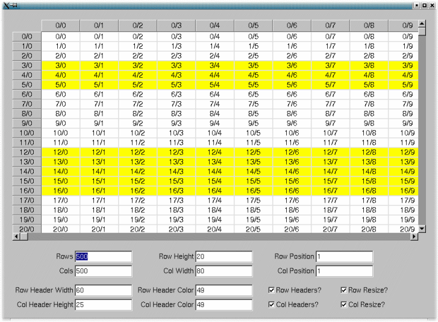
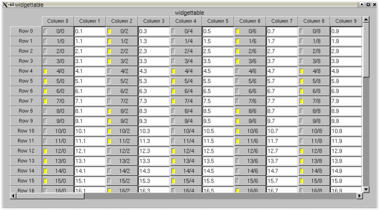
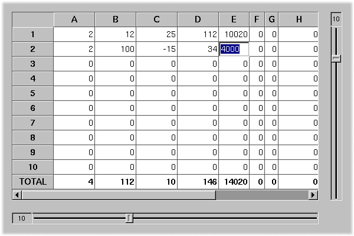

testtablerow-utf8.cxx - Simple test for Fl_Table_Row with utf8

sortapp.cxx - An application using Fl_Table_Row, and how to
sort columns by clicking on the column headers

exercisetablerow.cxx - Exerciser for the Fl_Table widget.

widgettable.cxx - Example showing how to embed FLTK

singleinput.cxx - Example of replicating one Fl_Input widget
for an Excel-like application